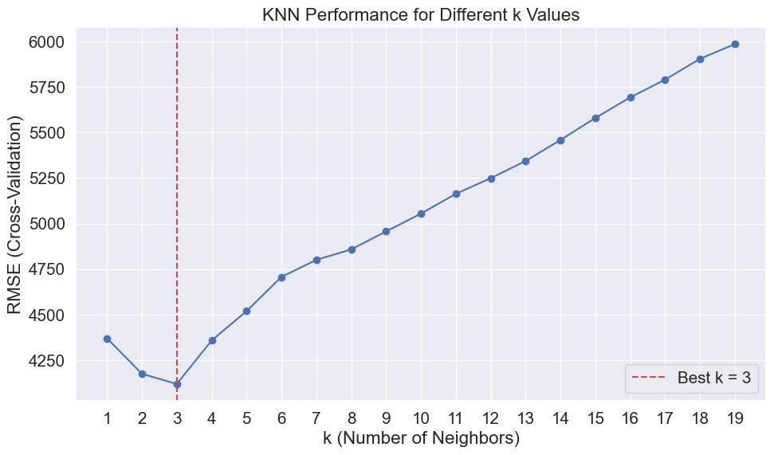

# Importing necessary libraries
import pandas as pd
import numpy as np
import matplotlib.pyplot as plt
import seaborn as sns
sns.set(font_scale=1.35)
from sklearn.preprocessing import StandardScaler
from sklearn.neighbors import KNeighborsRegressor, KNeighborsClassifier
from sklearn.model_selection import cross_val_score, GridSearchCV, cross_val_predict, KFold, RepeatedKFold
from sklearn.pipeline import Pipeline
from sklearn.compose import ColumnTransformer
from sklearn.preprocessing import OneHotEncoder, FunctionTransformer
from sklearn.metrics import root_mean_squared_error, r2_score2 KNN
Read section 4.7.6 of the book before using these notes.
Note that in this course, lecture notes are not sufficient, you must read the book for better understanding. Lecture notes are just implementing the concepts of the book on a dataset, but not explaining the concepts elaborately.
2.1 KNN for regression
# Load the dataset
car = pd.read_csv('Datasets/car.csv')
# Split the dataset into features and target variable
X = car.drop(columns=['price'])
y = car['price']
# split the dataset into training and testing sets
from sklearn.model_selection import train_test_split
X_train, X_test, y_train, y_test = train_test_split(X, y, test_size=0.2, random_state=42)# extract the categorical columns and put them in a list
cat_cols = X.select_dtypes(include=['object']).columns.tolist()
# extract the numerical columns and put them in a list
num_cols = X.select_dtypes(include=['int64', 'float64']).columns.tolist()# First transform categorical variables
preprocessor = ColumnTransformer(
transformers=[
('num', 'passthrough', num_cols), # Just pass numerical features through
('cat', OneHotEncoder(handle_unknown='ignore', sparse_output=False), cat_cols)
])
# Create pipeline that scales all features together
pipeline = Pipeline(steps=[
('preprocessor', preprocessor),
('scaler', StandardScaler()), # Scale everything together
('knn', KNeighborsRegressor(n_neighbors=5))
])
# Fit the pipeline to the training data
pipeline.fit(X_train, y_train)
# Predict on the test data
y_pred = pipeline.predict(X_test)
# Calculate RMSE
rmse = root_mean_squared_error(y_test, y_pred)
print(f"RMSE: {rmse:.2f}")
print(f"R² Score: {pipeline.score(X_test, y_test):.2f}")RMSE: 4364.84
R² Score: 0.94# show the features in the numerical transformer
pipeline.named_steps['preprocessor'].transformers_[0][1].get_feature_names_out()
print("numerical features in the pipeline:", pipeline.named_steps['preprocessor'].transformers_[0][1].get_feature_names_out())
# show the features in the categorical transformer
pipeline.named_steps['preprocessor'].transformers_[1][1].get_feature_names_out()
print("categorical features in the pipeline:", pipeline.named_steps['preprocessor'].transformers_[1][1].get_feature_names_out())numerical features in the pipeline: ['year' 'mileage' 'tax' 'mpg' 'engineSize']
categorical features in the pipeline: ['brand_audi' 'brand_bmw' 'brand_ford' 'brand_hyundi' 'brand_merc'
'brand_skoda' 'brand_toyota' 'brand_vauxhall' 'brand_vw'
'model_ 6 Series' 'model_ 7 Series' 'model_ 8 Series' 'model_ A7'
'model_ A8' 'model_ Agila' 'model_ Amarok' 'model_ Antara'
'model_ Arteon' 'model_ Avensis' 'model_ Beetle' 'model_ CC'
'model_ CLA Class' 'model_ CLK' 'model_ CLS Class' 'model_ Caddy'
'model_ Caddy Life' 'model_ Caddy Maxi Life' 'model_ California'
'model_ Camry' 'model_ Caravelle' 'model_ Combo Life' 'model_ Edge'
'model_ Eos' 'model_ Fusion' 'model_ G Class' 'model_ GL Class'
'model_ GLB Class' 'model_ GLS Class' 'model_ GT86' 'model_ GTC'
'model_ Galaxy' 'model_ Getz' 'model_ Grand C-MAX'
'model_ Grand Tourneo Connect' 'model_ Hilux' 'model_ I40' 'model_ I800'
'model_ IQ' 'model_ IX20' 'model_ IX35' 'model_ Jetta' 'model_ KA'
'model_ Kamiq' 'model_ Land Cruiser' 'model_ M Class' 'model_ M2'
'model_ M3' 'model_ M4' 'model_ M5' 'model_ M6' 'model_ Mustang'
'model_ PROACE VERSO' 'model_ Prius' 'model_ Puma' 'model_ Q8'
'model_ R8' 'model_ RS3' 'model_ RS4' 'model_ RS5' 'model_ RS6'
'model_ Rapid' 'model_ Roomster' 'model_ S Class' 'model_ S3' 'model_ S4'
'model_ SLK' 'model_ SQ5' 'model_ SQ7' 'model_ Santa Fe' 'model_ Scala'
'model_ Scirocco' 'model_ Shuttle' 'model_ Supra'
'model_ Tiguan Allspace' 'model_ Tourneo Connect' 'model_ Tourneo Custom'
'model_ V Class' 'model_ Verso' 'model_ Vivaro' 'model_ X-CLASS'
'model_ X4' 'model_ X6' 'model_ X7' 'model_ Yeti' 'model_ Z3' 'model_ Z4'
'model_ Zafira Tourer' 'model_ i3' 'model_ i8' 'transmission_Automatic'
'transmission_Manual' 'transmission_Other' 'transmission_Semi-Auto'
'fuelType_Diesel' 'fuelType_Electric' 'fuelType_Hybrid' 'fuelType_Other'
'fuelType_Petrol']2.2 Feature Scaling in KNN
Feature scaling is essential when using K-Nearest Neighbors (KNN) because the algorithm relies on calculating distances between data points. If features are measured on different scales (e.g., mileage in thousands and mpg in tens), the features with larger numeric ranges can dominate the distance calculations and distort the results.
To ensure that all features contribute equally, it’s important to standardize or normalize them before applying KNN. Common scaling techniques include:
- Standardization (zero mean, unit variance) using
StandardScaler - Min-max scaling to bring values into the
[0, 1]range
Without scaling, KNN may produce biased or misleading predictions.
The example below illustrates how the same KNN model performs without feature scaling, highlighting the importance of preprocessing your data.
preprocessor_no_scaling = ColumnTransformer(
transformers=[
('num', 'passthrough', num_cols), # Pass numerical features through without scaling
('cat', OneHotEncoder(handle_unknown='ignore'), cat_cols) # Only one-hot encode categorical
])
# Create pipeline without any scaling
pipeline_no_scaling = Pipeline(steps=[
('preprocessor', preprocessor_no_scaling),
('knn', KNeighborsRegressor(n_neighbors=5))
])
# Fit the pipeline
pipeline_no_scaling.fit(X_train, y_train)
# Evaluate
y_pred_no_scaling = pipeline_no_scaling.predict(X_test)
rmse_no_scaling = root_mean_squared_error(y_test, y_pred_no_scaling)
print(f"RMSE without scaling: {rmse_no_scaling:.2f}")
print(f"R² Score without scaling: {pipeline_no_scaling.score(X_test, y_test):.2f}")RMSE without scaling: 13758.38
R² Score without scaling: 0.352.3 Hyperparameters in KNN
The most important hyperparameter in K-Nearest Neighbors (KNN) is k, which determines the number of neighbors considered when making predictions. Tuning k helps balance the model’s bias and variance:
- A small k (e.g., 1 or 3) can lead to low bias but high variance, making the model sensitive to noise in the training data.
- A large k results in higher bias but lower variance, producing smoother predictions that may underfit the data.
2.3.1 Tuning k in KNN
To find the optimal value of k, it’s common to use cross-validation, which evaluates model performance on different subsets of the data. A popular tool for this is GridSearchCV, which automates the search process by testing multiple values of k using cross-validation behind the scenes. It selects the value of k that minimizes prediction error on unseen data—helping you achieve a good balance between underfitting and overfitting.
# Create parameter grid for k values
param_grid = {
'knn__n_neighbors': list(range(1, 20)) # Test k values from 1 to 20
}
# Set up GridSearchCV
grid_search = GridSearchCV(
estimator=pipeline,
param_grid=param_grid,
cv=5, # 5-fold cross-validation
scoring='neg_root_mean_squared_error', # Optimize for RMSE
n_jobs=-1, # Use all available cores
verbose=1
)
# Fit grid search
print("Tuning k parameter...")
grid_search.fit(X_train, y_train)
# Get best parameters and results
best_k = grid_search.best_params_['knn__n_neighbors']
best_score = -grid_search.best_score_ # Convert back from negative RMSE
print(f"Best k: {best_k}")
print(f"Best CV RMSE: {best_score:.2f}")
# Evaluate on test set using best model
best_model = grid_search.best_estimator_
y_pred = best_model.predict(X_test)
test_rmse = root_mean_squared_error(y_test, y_pred)
test_r2 = r2_score(y_test, y_pred)
print(f"Test RMSE with k={best_k}: {test_rmse:.2f}")
print(f"Test R² Score with k={best_k}: {test_r2:.2f}")Tuning k parameter...
Fitting 5 folds for each of 19 candidates, totalling 95 fits
Best k: 3
Best CV RMSE: 4117.42
Test RMSE with k=3: 4051.06
Test R² Score with k=3: 0.94# Plot performance across different k values
cv_results = grid_search.cv_results_
k_values = param_grid['knn__n_neighbors']
mean_rmse = -cv_results['mean_test_score']
plt.figure(figsize=(10, 6))
plt.plot(k_values, mean_rmse, marker='o')
plt.xlabel('k (Number of Neighbors)')
plt.ylabel('RMSE (Cross-Validation)')
plt.title('KNN Performance for Different k Values')
plt.grid(True)
plt.xticks(k_values)
plt.axvline(x=best_k, color='r', linestyle='--', label=f'Best k = {best_k}')
plt.legend()
plt.tight_layout()
plt.show()
The distances and the indices of the nearest K observations to each test observation can be obtained using the kneighbors() method.
# Get the KNN estimator from the pipeline
knn_estimator = best_model.named_steps['knn']
# Get indices of K-nearest neighbors for each test observation
neighbor_indices = knn_estimator.kneighbors(best_model.named_steps['preprocessor'].transform(X_test),
return_distance=False)
# neighbor_indices will contain the indices of the K nearest neighbors for each test observation
# Note: The indices are relative to the training set, not the test set.
# To get the actual neighbor observations, you can use these indices to index into the training set
# For example, to get the actual neighbor observations for the first test observation:
neighbors = X_train.iloc[neighbor_indices[0]]
neighbors| brand | model | year | transmission | mileage | fuelType | tax | mpg | engineSize | |
|---|---|---|---|---|---|---|---|---|---|
| 4580 | merc | V Class | 2010 | Automatic | 259000 | Diesel | 540 | 30.8345 | 3.0 |
| 5651 | merc | CLK | 2003 | Automatic | 185000 | Petrol | 330 | 18.0803 | 4.3 |
| 3961 | vw | Caravelle | 2006 | Manual | 178000 | Diesel | 325 | 34.5738 | 2.5 |
2.3.2 Tuning Other KNN Hyperparameters
In addition to the number of neighbors (k), KNN has several other important hyperparameters that can significantly affect the model’s performance. Fine-tuning these settings helps you get the most out of the algorithm. Key hyperparameters include:
weights: Determines how the neighbors contribute to the prediction.'uniform': All neighbors are weighted equally (default).
'distance': Closer neighbors have more influence.
- Choosing
'distance'can improve performance, especially when data points are unevenly distributed.
metric: Defines the distance function used to measure similarity between data points.'minkowski'(default) is a general-purpose metric that includes both Euclidean and Manhattan distances.
- Other options include
'euclidean','manhattan', or even custom distance functions.
p: Used whenmetric='minkowski'.p=2gives Euclidean distance (standard for continuous features).
p=1gives Manhattan distance (useful when features are sparse or grid-based).
algorithm: Controls the method used to compute nearest neighbors.'auto','ball_tree','kd_tree', or'brute'.
- Most users can leave this as
'auto', which lets scikit-learn choose the best algorithm based on the data.
These hyperparameters can be tuned using GridSearchCV to find the combination that yields the best performance on validation data.
The model hyperparameters can be obtained using the get_params() method. Note that there are other hyperparameters to tune in addition to number of neighbors. However, the number of neighbours may be the most influential hyperparameter in most cases.
# Get the best model parameters
best_model.get_params(){'memory': None,
'steps': [('preprocessor',
ColumnTransformer(transformers=[('num', 'passthrough',
['year', 'mileage', 'tax', 'mpg',
'engineSize']),
('cat',
OneHotEncoder(handle_unknown='ignore',
sparse_output=False),
['brand', 'model', 'transmission',
'fuelType'])])),
('scaler', StandardScaler()),
('knn', KNeighborsRegressor(n_neighbors=3))],
'transform_input': None,
'verbose': False,
'preprocessor': ColumnTransformer(transformers=[('num', 'passthrough',
['year', 'mileage', 'tax', 'mpg',
'engineSize']),
('cat',
OneHotEncoder(handle_unknown='ignore',
sparse_output=False),
['brand', 'model', 'transmission',
'fuelType'])]),
'scaler': StandardScaler(),
'knn': KNeighborsRegressor(n_neighbors=3),
'preprocessor__force_int_remainder_cols': True,
'preprocessor__n_jobs': None,
'preprocessor__remainder': 'drop',
'preprocessor__sparse_threshold': 0.3,
'preprocessor__transformer_weights': None,
'preprocessor__transformers': [('num',
'passthrough',
['year', 'mileage', 'tax', 'mpg', 'engineSize']),
('cat',
OneHotEncoder(handle_unknown='ignore', sparse_output=False),
['brand', 'model', 'transmission', 'fuelType'])],
'preprocessor__verbose': False,
'preprocessor__verbose_feature_names_out': True,
'preprocessor__num': 'passthrough',
'preprocessor__cat': OneHotEncoder(handle_unknown='ignore', sparse_output=False),
'preprocessor__cat__categories': 'auto',
'preprocessor__cat__drop': None,
'preprocessor__cat__dtype': numpy.float64,
'preprocessor__cat__feature_name_combiner': 'concat',
'preprocessor__cat__handle_unknown': 'ignore',
'preprocessor__cat__max_categories': None,
'preprocessor__cat__min_frequency': None,
'preprocessor__cat__sparse_output': False,
'scaler__copy': True,
'scaler__with_mean': True,
'scaler__with_std': True,
'knn__algorithm': 'auto',
'knn__leaf_size': 30,
'knn__metric': 'minkowski',
'knn__metric_params': None,
'knn__n_jobs': None,
'knn__n_neighbors': 3,
'knn__p': 2,
'knn__weights': 'uniform'}# Extended parameter grid
param_grid = {
'knn__n_neighbors': list(range(1, 20, 2)), # Test odd k values from 1 to 19 (step=2 for efficiency)
'knn__weights': ['uniform', 'distance'], # Uniform: equal weight; Distance: closer neighbors weigh more
'knn__metric': ['euclidean', 'manhattan', 'minkowski'], # Common distance metrics
'knn__p': [1, 2] # p=1 (Manhattan), p=2 (Euclidean) - only relevant for Minkowski
}
# Set up GridSearchCV
grid_search = GridSearchCV(
estimator=pipeline,
param_grid=param_grid,
cv=5, # 5-fold cross-validation
scoring='neg_root_mean_squared_error', # Optimize for RMSE
n_jobs=-1, # Use all available cores
verbose=1
)
# Fit grid search
print("Tuning KNN hyperparameters...")
grid_search.fit(X_train, y_train)
# Get best parameters and results
best_params = grid_search.best_params_
best_score = -grid_search.best_score_ # Convert negative RMSE to positive
# Display results
print("\nBest Parameters:")
for param, value in best_params.items():
print(f"{param}: {value}")
print(f"Best CV RMSE: {best_score:.2f}")
# Evaluate on test set using best model
best_model = grid_search.best_estimator_
y_pred = best_model.predict(X_test)
test_rmse = root_mean_squared_error(y_test, y_pred) # Calculate RMSE
print(f"Test RMSE: {test_rmse:.2f}")Tuning KNN hyperparameters...
Fitting 5 folds for each of 120 candidates, totalling 600 fits
Best Parameters:
knn__metric: euclidean
knn__n_neighbors: 3
knn__p: 1
knn__weights: distance
Best CV RMSE: 4001.34
Test RMSE: 3826.94The results for each cross-validation are stored in the cv_results_ attribute.
pd.DataFrame(grid_search.cv_results_).head()| mean_fit_time | std_fit_time | mean_score_time | std_score_time | param_knn__metric | param_knn__n_neighbors | param_knn__p | param_knn__weights | params | split0_test_score | split1_test_score | split2_test_score | split3_test_score | split4_test_score | mean_test_score | std_test_score | rank_test_score | |
|---|---|---|---|---|---|---|---|---|---|---|---|---|---|---|---|---|---|
| 0 | 0.033124 | 0.003042 | 0.127347 | 0.023598 | euclidean | 1 | 1 | uniform | {'knn__metric': 'euclidean', 'knn__n_neighbors... | -4656.637196 | -3474.998033 | -4250.919748 | -4620.623046 | -4839.806784 | -4368.596961 | 485.981480 | 64 |
| 1 | 0.035615 | 0.010407 | 0.179835 | 0.013115 | euclidean | 1 | 1 | distance | {'knn__metric': 'euclidean', 'knn__n_neighbors... | -4656.637196 | -3474.998033 | -4250.919748 | -4620.623046 | -4839.806784 | -4368.596961 | 485.981480 | 64 |
| 2 | 0.027877 | 0.002536 | 0.148597 | 0.018612 | euclidean | 1 | 2 | uniform | {'knn__metric': 'euclidean', 'knn__n_neighbors... | -4656.637196 | -3474.998033 | -4250.919748 | -4620.623046 | -4839.806784 | -4368.596961 | 485.981480 | 64 |
| 3 | 0.043631 | 0.016927 | 0.168392 | 0.027444 | euclidean | 1 | 2 | distance | {'knn__metric': 'euclidean', 'knn__n_neighbors... | -4656.637196 | -3474.998033 | -4250.919748 | -4620.623046 | -4839.806784 | -4368.596961 | 485.981480 | 64 |
| 4 | 0.043071 | 0.009615 | 0.184532 | 0.042681 | euclidean | 3 | 1 | uniform | {'knn__metric': 'euclidean', 'knn__n_neighbors... | -4227.667178 | -3303.871045 | -3851.430697 | -4603.426146 | -4600.719641 | -4117.422942 | 492.858432 | 22 |
These results can be useful to see if other hyperparameter values are equally good.
pd.DataFrame(grid_search.cv_results_).sort_values(by = 'rank_test_score').head()| mean_fit_time | std_fit_time | mean_score_time | std_score_time | param_knn__metric | param_knn__n_neighbors | param_knn__p | param_knn__weights | params | split0_test_score | split1_test_score | split2_test_score | split3_test_score | split4_test_score | mean_test_score | std_test_score | rank_test_score | |
|---|---|---|---|---|---|---|---|---|---|---|---|---|---|---|---|---|---|
| 87 | 0.038193 | 0.010690 | 0.149261 | 0.050225 | minkowski | 3 | 2 | distance | {'knn__metric': 'minkowski', 'knn__n_neighbors... | -4298.611714 | -3197.944286 | -3735.321059 | -4407.722340 | -4367.108381 | -4001.341556 | 469.790238 | 1 |
| 5 | 0.047902 | 0.013181 | 0.185623 | 0.049865 | euclidean | 3 | 1 | distance | {'knn__metric': 'euclidean', 'knn__n_neighbors... | -4298.611714 | -3197.944286 | -3735.321059 | -4407.722340 | -4367.108381 | -4001.341556 | 469.790238 | 1 |
| 7 | 0.040595 | 0.005817 | 0.132290 | 0.009807 | euclidean | 3 | 2 | distance | {'knn__metric': 'euclidean', 'knn__n_neighbors... | -4298.611714 | -3197.944286 | -3735.321059 | -4407.722340 | -4367.108381 | -4001.341556 | 469.790238 | 1 |
| 51 | 0.034996 | 0.001900 | 0.744842 | 0.052065 | manhattan | 5 | 2 | distance | {'knn__metric': 'manhattan', 'knn__n_neighbors... | -4090.438714 | -3258.873954 | -3680.152758 | -4846.570061 | -4192.419206 | -4013.690938 | 531.510686 | 4 |
| 49 | 0.031465 | 0.004676 | 0.718503 | 0.057517 | manhattan | 5 | 1 | distance | {'knn__metric': 'manhattan', 'knn__n_neighbors... | -4090.438714 | -3258.873954 | -3680.152758 | -4846.570061 | -4192.419206 | -4013.690938 | 531.510686 | 4 |
The results show that the next two best hyperparameter values yield the same performance as the printed one
2.4 Hyperparameter Tuning
We used GridSearchCV to tune the hyperparameters of our KNN model above. Given a relatively simple set of hyperparameters and a limited number of combinations, this approach was sufficient to reduce the RMSE.
However, when the number of possible hyperparameter values grows large, GridSearchCV can become computationally expensive. In such cases, RandomizedSearchCV provides a more efficient alternative by sampling a fixed number of random combinations from the specified hyperparameter space. This makes it well-suited for scenarios with limited computational resources.
2.4.0.1 RandomizedSearchCV
from sklearn.model_selection import RandomizedSearchCV
from scipy.stats import randint
# Set up RandomizedSearchCV
# Define parameter distributions for randomized search
param_distributions = {
'knn__n_neighbors': randint(1, 20), # Random ints from 1 to 19
'knn__weights': ['uniform', 'distance'],
'knn__metric': ['euclidean', 'manhattan', 'minkowski'],
'knn__p': [1, 2] # Only relevant for Minkowski
}# Set up RandomizedSearchCV
random_search = RandomizedSearchCV(
estimator=pipeline,
param_distributions=param_distributions,
n_iter=30, # Number of random combinations to try
cv=5,
scoring='neg_root_mean_squared_error',
n_jobs=-1,
random_state=42,
verbose=1
)# Fit randomized search
print("Tuning KNN hyperparameters with RandomizedSearchCV...")
random_search.fit(X_train, y_train)
# Best results
best_params = random_search.best_params_
best_score = -random_search.best_score_
# Display results
print("\nBest Parameters (RandomizedSearchCV):")
for param, value in best_params.items():
print(f"{param}: {value}")
print(f"Best CV RMSE: {best_score:.2f}")Tuning KNN hyperparameters with RandomizedSearchCV...
Fitting 5 folds for each of 30 candidates, totalling 150 fits
Best Parameters (RandomizedSearchCV):
knn__metric: manhattan
knn__n_neighbors: 8
knn__p: 2
knn__weights: distance
Best CV RMSE: 4005.70# Evaluate on test set
best_model = random_search.best_estimator_
y_pred = best_model.predict(X_test)
# Calculate RMSE
test_rmse = root_mean_squared_error(y_test, y_pred)
print(f"Test RMSE: {test_rmse:.2f}")Test RMSE: 3811.89Why might RandomizedSearchCV outperform GridSearchCV?
Although GridSearchCV systematically evaluates all combinations of hyperparameter values from a predefined grid, it doesn’t guarantee the best performance. In some cases, RandomizedSearchCV can actually perform better. Here’s why:
Limited Grid Resolution:
GridSearchCVevaluates only the specific values you include in the grid. If the true optimal value lies between grid points, it may be missed entirely.Broader Exploration:
RandomizedSearchCVsamples from distributions (e.g., continuous or discrete ranges), allowing it to explore a wider range of hyperparameter values, including combinations not explicitly considered in a grid.In this case,
list(range(1, 20, 2))inGridSearchCV- But in
RandomizedSearchCV, it samples fromrandint(1, 20)
The best
n_neighborshappens to be 11, onlyRandomizedSearchCVcan find it unless you explicitly included it in your grid.Efficiency in High Dimensions:
In high-dimensional search spaces, the number of combinations in a grid grows exponentially.RandomizedSearchCVremains efficient by sampling a fixed number of combinations, avoiding the “curse of dimensionality.”Better Use of Time Budget:
Given the same computational budget,RandomizedSearchCVmay cover more diverse regions of the search space and stumble upon better-performing configurations.
In summary, RandomizedSearchCV is not only faster but can also lead to better models—especially when the hyperparameter space is large, continuous, or contains irrelevant parameters.
2.4.0.2 BayesSearchCV
In addition to these methods, BayesSearchCV, based on Bayesian optimization, provides a more intelligent approach to hyperparameter tuning. It models the performance landscape and selects hyperparameter combinations to evaluate based on past results, often requiring fewer evaluations to find optimal or near-optimal values. This makes BayesSearchCV a powerful option, especially when training models is costly.
# Step 1: Install scikit-optimize if not already installed
!pip install scikit-optimizeCollecting scikit-optimize
Downloading scikit_optimize-0.10.2-py2.py3-none-any.whl.metadata (9.7 kB)
Requirement already satisfied: joblib>=0.11 in c:\users\lsi8012\appdata\local\anaconda3\lib\site-packages (from scikit-optimize) (1.4.2)
Collecting pyaml>=16.9 (from scikit-optimize)
Downloading pyaml-25.1.0-py3-none-any.whl.metadata (12 kB)
Requirement already satisfied: numpy>=1.20.3 in c:\users\lsi8012\appdata\local\anaconda3\lib\site-packages (from scikit-optimize) (1.26.4)
Requirement already satisfied: scipy>=1.1.0 in c:\users\lsi8012\appdata\local\anaconda3\lib\site-packages (from scikit-optimize) (1.13.1)
Requirement already satisfied: scikit-learn>=1.0.0 in c:\users\lsi8012\appdata\local\anaconda3\lib\site-packages (from scikit-optimize) (1.6.1)
Requirement already satisfied: packaging>=21.3 in c:\users\lsi8012\appdata\roaming\python\python312\site-packages (from scikit-optimize) (24.2)
Requirement already satisfied: PyYAML in c:\users\lsi8012\appdata\local\anaconda3\lib\site-packages (from pyaml>=16.9->scikit-optimize) (6.0.1)
Requirement already satisfied: threadpoolctl>=3.1.0 in c:\users\lsi8012\appdata\local\anaconda3\lib\site-packages (from scikit-learn>=1.0.0->scikit-optimize) (3.5.0)
Downloading scikit_optimize-0.10.2-py2.py3-none-any.whl (107 kB)
---------------------------------------- 0.0/107.8 kB ? eta -:--:--
------------------------------------- -- 102.4/107.8 kB 5.8 MB/s eta 0:00:01
---------------------------------------- 107.8/107.8 kB 3.1 MB/s eta 0:00:00
Downloading pyaml-25.1.0-py3-none-any.whl (26 kB)
Installing collected packages: pyaml, scikit-optimize
Successfully installed pyaml-25.1.0 scikit-optimize-0.10.2from skopt import BayesSearchCV
from skopt.space import Integer, Categorical# Step 3: Define search space for Bayesian optimization
search_space = {
'knn__n_neighbors': Integer(1, 19), # Odd values will be sampled if needed
'knn__weights': Categorical(['uniform', 'distance']),
'knn__metric': Categorical(['euclidean', 'manhattan', 'minkowski']),
'knn__p': Integer(1, 2) # Used only when metric is minkowski
}# Step 4: Set up BayesSearchCV
bayes_search = BayesSearchCV(
estimator=pipeline,
search_spaces=search_space,
n_iter=30, # Number of different combinations to try
scoring='neg_root_mean_squared_error',
cv=5,
n_jobs=-1,
verbose=1,
random_state=42
)# Step 5: Fit BayesSearchCV
print("Tuning KNN hyperparameters with Bayesian Optimization...")
bayes_search.fit(X_train, y_train)
# Get best parameters and best score
best_params = bayes_search.best_params_
best_score = -bayes_search.best_score_ # Convert negative RMSE to positive
# Display results
print("\nBest Parameters (Bayesian Optimization):")
for param, value in best_params.items():
print(f"{param}: {value}")
print(f"Best CV RMSE: {best_score:.2f}")Tuning KNN hyperparameters with Bayesian Optimization...
Fitting 5 folds for each of 1 candidates, totalling 5 fits
Fitting 5 folds for each of 1 candidates, totalling 5 fits
Fitting 5 folds for each of 1 candidates, totalling 5 fits
Fitting 5 folds for each of 1 candidates, totalling 5 fits
Fitting 5 folds for each of 1 candidates, totalling 5 fits
Fitting 5 folds for each of 1 candidates, totalling 5 fits
Fitting 5 folds for each of 1 candidates, totalling 5 fits
Fitting 5 folds for each of 1 candidates, totalling 5 fits
Fitting 5 folds for each of 1 candidates, totalling 5 fits
Fitting 5 folds for each of 1 candidates, totalling 5 fits
Fitting 5 folds for each of 1 candidates, totalling 5 fits
Fitting 5 folds for each of 1 candidates, totalling 5 fits
Fitting 5 folds for each of 1 candidates, totalling 5 fits
Fitting 5 folds for each of 1 candidates, totalling 5 fits
Fitting 5 folds for each of 1 candidates, totalling 5 fits
Fitting 5 folds for each of 1 candidates, totalling 5 fits
Fitting 5 folds for each of 1 candidates, totalling 5 fits
Fitting 5 folds for each of 1 candidates, totalling 5 fitsc:\Users\lsi8012\AppData\Local\anaconda3\Lib\site-packages\skopt\optimizer\optimizer.py:517: UserWarning: The objective has been evaluated at point ['manhattan', 5, 2, 'distance'] before, using random point ['euclidean', 12, 1, 'distance']
warnings.warn(Fitting 5 folds for each of 1 candidates, totalling 5 fitsc:\Users\lsi8012\AppData\Local\anaconda3\Lib\site-packages\skopt\optimizer\optimizer.py:517: UserWarning: The objective has been evaluated at point ['manhattan', 5, 2, 'distance'] before, using random point ['euclidean', 9, 2, 'distance']
warnings.warn(Fitting 5 folds for each of 1 candidates, totalling 5 fitsc:\Users\lsi8012\AppData\Local\anaconda3\Lib\site-packages\skopt\optimizer\optimizer.py:517: UserWarning: The objective has been evaluated at point ['manhattan', 5, 2, 'distance'] before, using random point ['manhattan', 5, 1, 'distance']
warnings.warn(Fitting 5 folds for each of 1 candidates, totalling 5 fits
Fitting 5 folds for each of 1 candidates, totalling 5 fits
Fitting 5 folds for each of 1 candidates, totalling 5 fits
Fitting 5 folds for each of 1 candidates, totalling 5 fitsc:\Users\lsi8012\AppData\Local\anaconda3\Lib\site-packages\skopt\optimizer\optimizer.py:517: UserWarning: The objective has been evaluated at point ['manhattan', 5, 1, 'distance'] before, using random point ['manhattan', 4, 2, 'uniform']
warnings.warn(Fitting 5 folds for each of 1 candidates, totalling 5 fitsc:\Users\lsi8012\AppData\Local\anaconda3\Lib\site-packages\skopt\optimizer\optimizer.py:517: UserWarning: The objective has been evaluated at point ['manhattan', 5, 1, 'distance'] before, using random point ['euclidean', 6, 1, 'uniform']
warnings.warn(Fitting 5 folds for each of 1 candidates, totalling 5 fitsc:\Users\lsi8012\AppData\Local\anaconda3\Lib\site-packages\skopt\optimizer\optimizer.py:517: UserWarning: The objective has been evaluated at point ['manhattan', 5, 1, 'distance'] before, using random point ['euclidean', 13, 1, 'distance']
warnings.warn(Fitting 5 folds for each of 1 candidates, totalling 5 fitsc:\Users\lsi8012\AppData\Local\anaconda3\Lib\site-packages\skopt\optimizer\optimizer.py:517: UserWarning: The objective has been evaluated at point ['manhattan', 5, 1, 'distance'] before, using random point ['euclidean', 6, 1, 'uniform']
warnings.warn(Fitting 5 folds for each of 1 candidates, totalling 5 fitsc:\Users\lsi8012\AppData\Local\anaconda3\Lib\site-packages\skopt\optimizer\optimizer.py:517: UserWarning: The objective has been evaluated at point ['manhattan', 5, 1, 'distance'] before, using random point ['manhattan', 2, 2, 'uniform']
warnings.warn(Fitting 5 folds for each of 1 candidates, totalling 5 fits
Fitting 5 folds for each of 1 candidates, totalling 5 fits
Best Parameters (Bayesian Optimization):
knn__metric: manhattan
knn__n_neighbors: 8
knn__p: 2
knn__weights: distance
Best CV RMSE: 4005.70# Step 6: Evaluate on test set
best_model = bayes_search.best_estimator_
y_pred = best_model.predict(X_test)
# Calculate RMSE on test set
test_rmse = root_mean_squared_error(y_test, y_pred)
print(f"Test RMSE: {test_rmse:.2f}")Test RMSE: 3811.89